Home page and logo designs for Upward Calling
Each one uses Christen's real content, in the same section order. Open them, try them on your phone, and choose the one that feels most like Upward Calling.
These are previews: the contact forms don't send anything, and the wording can still change.
Round 1
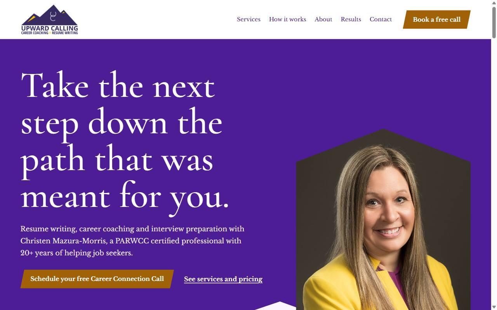
1. The Ascent
Purple and gold, with mountain ridges and chevrons taken from the logo.
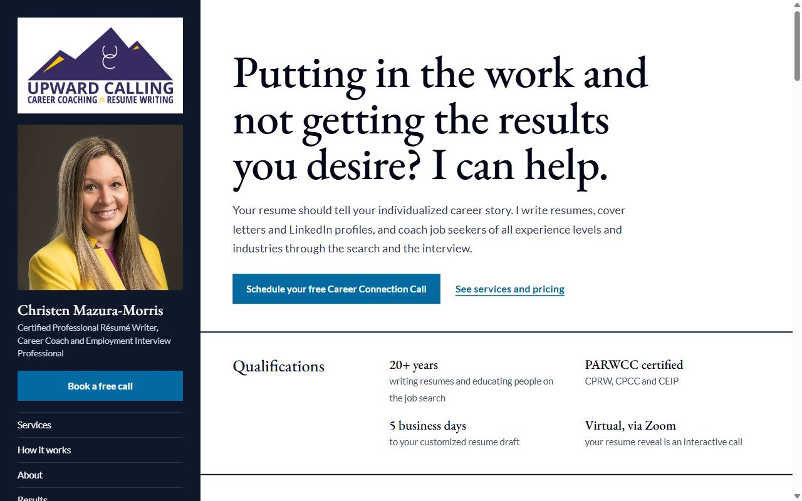
2. The Résumé
Navy and blue, laid out like one of her polished resumes, with a sidebar.
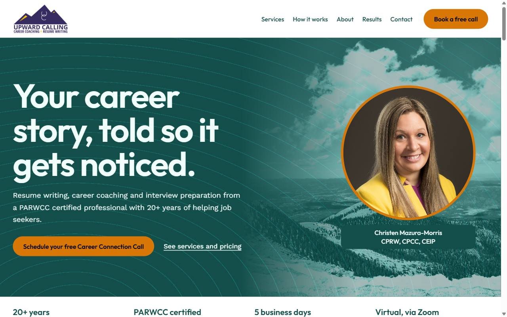
3. The Trail
Teal and amber, friendly and rounded, with a process that climbs the page.
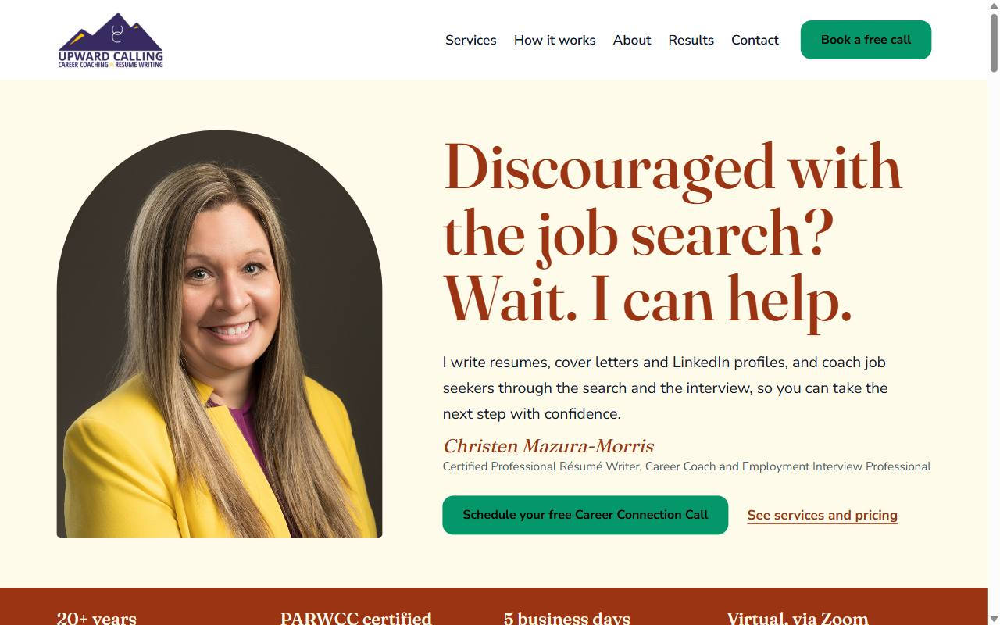
4. The Letter
Terracotta and green, warm and personal, like a note from Christen.
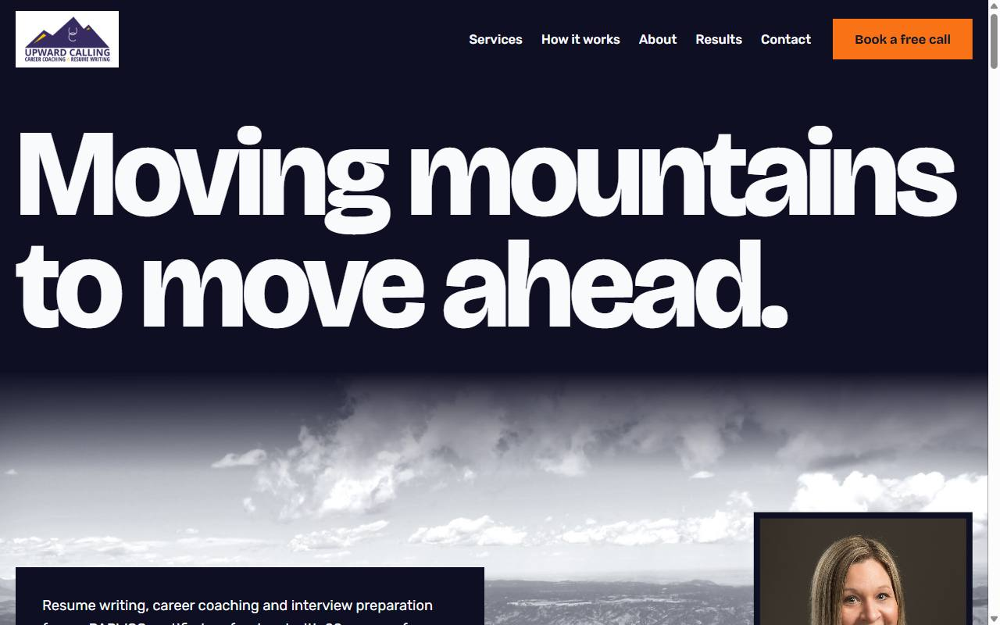
5. The Summit
Dark indigo and orange, bold, with "Moving mountains" as the headline.
Round 2
Bolder ideas, inspired by recent award-winning websites.
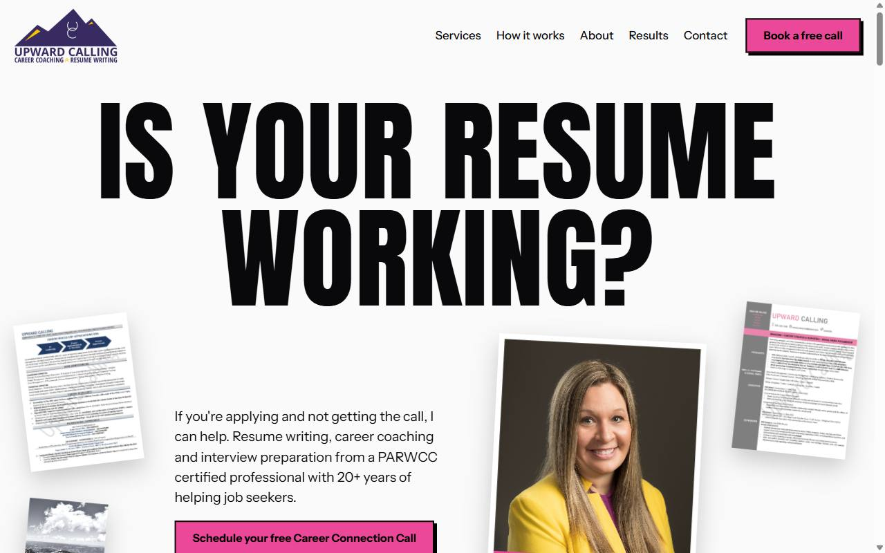
6. The Collage
Black and pink, with a giant question surrounded by her resumes and photos.
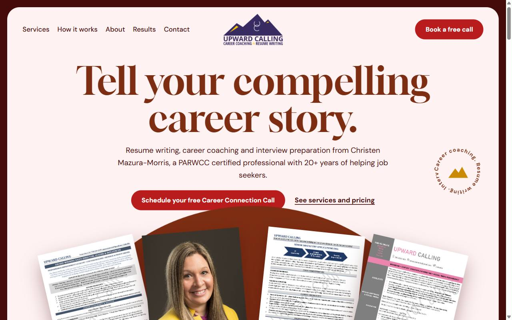
7. The Portfolio
Burgundy and gold, with her resumes floating at angles like a display.
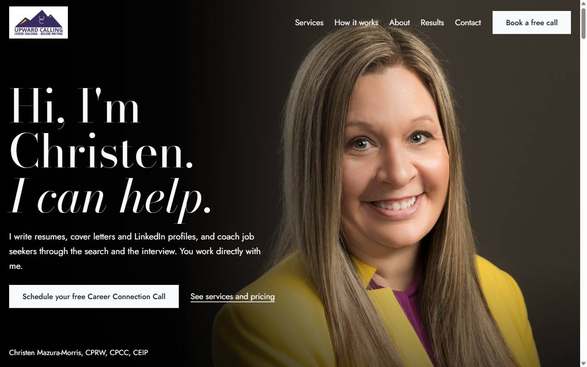
8. The Portrait
Black and white, led by a full-screen portrait of Christen.
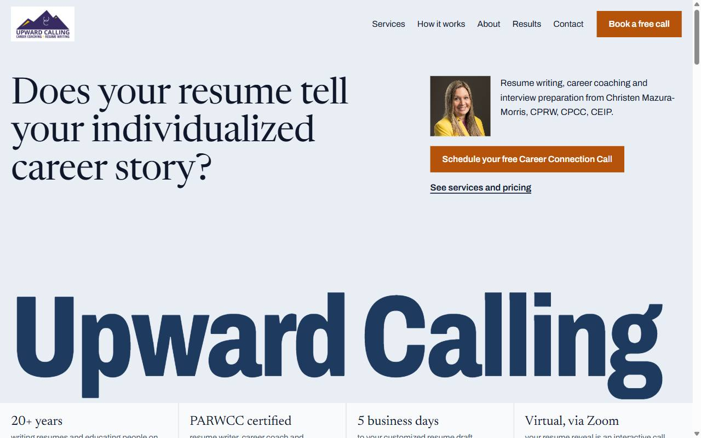
9. The Index
Navy and gold on pale blue-gray, with a giant name and a clean, orderly grid.
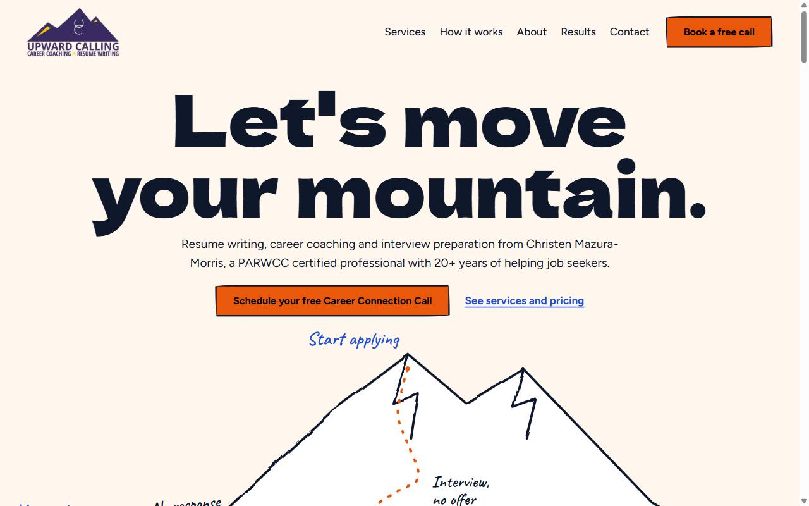
10. The Sketchbook
Orange and blue on paper, with a hand-drawn climb up a mountain.
Logo Designs
The best five from a longer set of ideas. Each is shown on white, on purple and at small sizes. Any of them can go with any home page design.
-
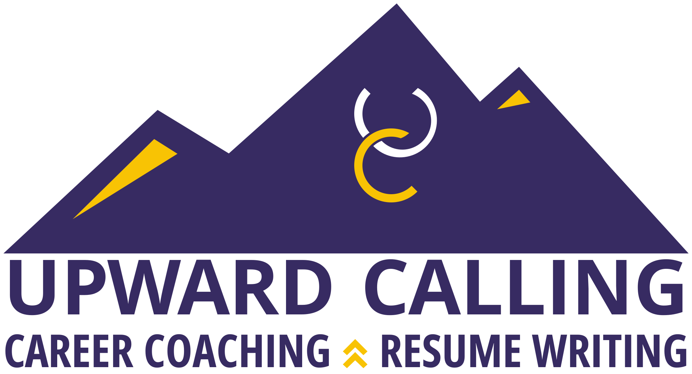
48 and 32 pixels tallOriginal, Gold C
Her current logo, redrawn. The same design in clean artwork, with a bolder monogram and a C in the gold of the mountain peaks.
-
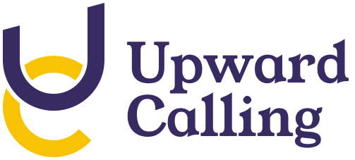
48, 32 and 16 pixelsThe Link
Based on her current logo. Her U and C as one interlaced ribbon, linked like coach and client, with a small fish shape where they overlap.
-
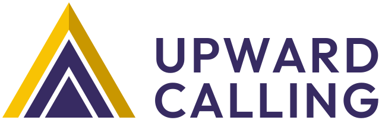
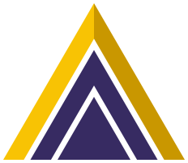
48, 32 and 16 pixelsRising Range
Based on her current logo. Her mountain and chevrons become one shape: nested peaks spreading outward, like a call rising.
-
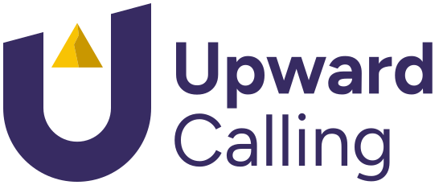
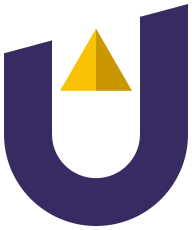
48, 32 and 16 pixelsSummit U
Designed from scratch. A U whose top edge climbs to the right, with a gold summit exactly on that line. It also reads as a person with arms raised.
-
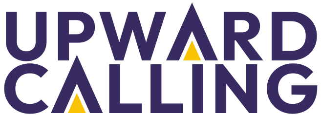
48 and 28 pixels tallPeak Wordmark
Designed from scratch. The name on its own: each A is a sharp peak breaking the line, with a small gold peak inside. No symbol needed.